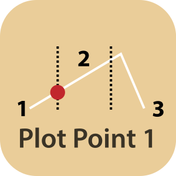
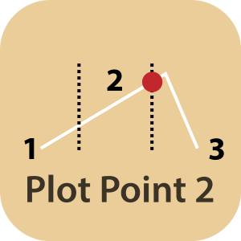

Plot Point: Ein einschneidendes Ereignis, das den erwarteten Handlungsverlauf unterbricht und ihm eine neue Richtung gibt. Die Hauptfigur wird überraschend mit einem neuen Konflikt oder einer Krise konfrontiert. Die Bewältigung dieses Ereignisses oder das Scheitern daran bestimmt den weiteren Handlungsverlauf der Geschichte. Innerhalb der klassischen Dreiaktstruktur des Hollywood-Kinos gibt es für gewöhnlich zwei Plot Points, je einen am Ende des ersten und des zweiten Aktes, um den folgenden Akt einzuleiten.

